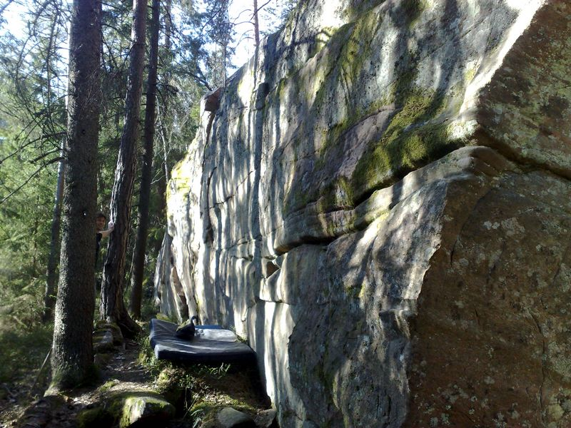
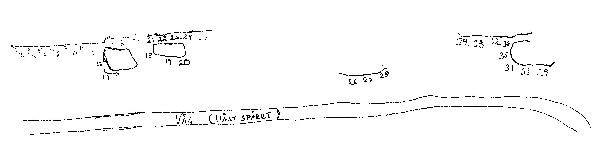

Hästspåret
GPS: 59.4158,13.515
Allmänt
I skogen vid stadsdelen Rud i Karlstad finns några klippväggar och utspridda block. Primärt problem i det lättare registret men annat gôtt återfinns också.
Vägbeskrivning
Parkera vid bostadsområdet i närheten av Horsensgatan. Obs. betalparkering.
Förbjudet att parkera vid förskolan som ligger till vänster om du kommer från stan och kör uppför Horsensgatan. Har hittills varit riskfritt att parkera på den grusplats som är bakom busshållplatsen direkt efter förskolan. Högst upp på Horsensgatan finns en parkeringsficka till vänster. För latmaskar som tar bilen till löprundan i elljusspåret. Vid parkering här blir det lite längre att promenera.
Promenera rakt in i skogen bakom/förbi förskolan via en av många vältrampade stigar. Du kommer strax ut på ett elljusspår. Följ detta åt vänster (max 100m?) tills du ser en sprayfärgad (orange) gran/tall intill en ljusstolpe. Vik in på stigen som går in vid sprayade trädet. Följ denna väl upptrampade stig över stock och sten i lätt stigning via fler orangefärgade träd. Efter ett hundratal meter kommer du fram till en grövre grusstig som är hästspåret. Följ denna uppåt åt vänster. När uppförsbacken tar slut tar klipporna vid. Det bästa hittar du längst ner i nedförsbacken.
Topo

Vertikala väggen. Problem 1-12

Problem
- 3
- Bågen
- 3+
- använd listerna till toppen
- 4
- Inte så svår som man kan tro
- 6a
-
- 5
- Layaway
- 5c
- ta juggen och gå rakt upp
- 7
- Bowl
- 6a+
- rakt upp på facet bredvid sprickan, lite otäckt utsteg
- 8
- Depeche Mode på Arvikafestivalen
- 6c
- Börja där horisontalspricka möter en lodrät spricka. Rakt upp på facet via det grunda enfingerhålet (som faktiskt sväljer två fingertoppar). Nyp till och gå rakt upp till dåliga crimpar, möblera fötter och fortsätt rakt upp via crimp och kant. FA gjordes utan bulliga gastongreppet kl 13 som underlättar något. Varianter finns således. Hur som helst känsligt och balansigt problem. Graden oviss. Prova och bedöm själv
- 9
- Brave
- 6a
- crimpa och gå till tvärsprickan
- 10
- Namnlös
- 6a
- som ovan nämnda led
- 13
- Grytkryp
- 5a
- liggstart med benen i grottan, rakt upp via snälla grepp till hyllan där mantlingen tar vid. Roligt/annorlunda och fint problem.
- 14
- Projekt
- ?
- samma start som {{ledlänk|namn=Grytkryp}} men låg travers ut till högerhörnet och sedan upp. Beundransvärt nyp i crimpen och kroppstyrka troliga nyckelingredienser.
-
- projekt?
- ?
- samma som projekt i problem 14, men traversen görs högt istället för lågt.
- 15
- Namnlös
- 6a
- sittstart via sidepull och upp
-
- Fackpampen
- 4
- Balansövning till vänster om Träben. Längst till vänster på blocket finns tydliga steg. Rakt upp. Händerna på ryggen.
- 18
- Träben
- 6b
- Sittstart i gropen/hålet. Tidigare nejdens hårdaste 6b om man var över 175cm lång. Dåvarande lösning = heelhook vänster, dra ut högerbenet ur gropen och gå rakt upp på "areten". Ny lösning = heelhook höger och upp.
- 19
- Namnlös
- 5c
- vid mitten av stenen och upp via crimper
- 20
- It ain't over until it's over
- 6c
- Börjar i nedre tvärsprickan upp till list och upp via sprickan som går snett upp åt vänster. Listen numera borta. Oklart hur det påverkat graden
- 20a
- Parasiten
- 7a?
- Sittstart vid tydliga och snälla startgrepp i nedre högra hörnet på blocket. Leta dig upp via areten till läppen, följ läppen till vänster en meter till du möter den tunna, tunna lodräta sprickan. Utsteget är rakt upp över denna. Stenen i nederkant tillhör annat block och är (såklart) uteslutet. Mkt fint problem som bjuder på intressant och sportig klättring. Namnet taget från projektnamnet på FA's då ofödda avkomma.
- 21
- Sunes crimp
- 6a+
- tidigare graderad 6c
- 22
- Fina pinchen
- 6a
- upp till sidepull sedan till pinch och avsluta med slope
- 23
- Namnlös
- 4
- upp längst med sprickan
- 24
- Namnlös 5b
- 5b
- stå på stora stenen och upp utan att använda vänstra sprickan i led 23
- 25
- Namnlös 5a
- 5a
- upp på lister som bara blir bättre och bättre
- 26
- Svag tendens till svängdörr
- 6c
- Börja på två sidepulls och sedan upp Kanske 6a eller 6b
- 27
- Ingen svängdörr alls
- 5b
-
- 31
- Namnlös
- 4+
- areten sittstart
- 34
- Namnlös
- 4
- traversera på slopiga kanten med händerna
- 35a
- Drop Knee
- 5a
- Facet till vänster om nr 29
- 35b
- variant
- 6a
- trevlig sittstart som nr 36 sen vidare höger och upp för 35A
Kategori:bouldering
Kategori:sva
Kategori:vertikalt
kategori:Saknar skrivarformatering
Category:Värmland
Copyright (C) Permission is granted to copy, distribute and/or modify this document under the terms of the GNU Free Documentation License, Version 1.3